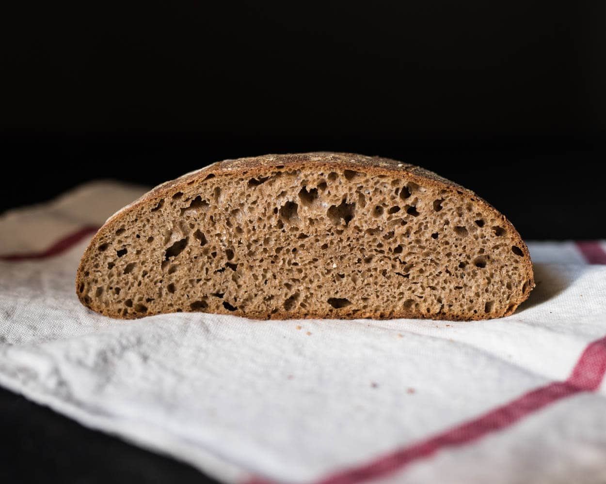

100% Whole Wheat Sourdough Bread

Healthy, nutritious sourdough made with only whole wheat flour, water, and salt — no fillers, just great-tasting bread.
64gwhole wheat flour32gwater32gripe sourdough starter
Mix the levain, cover, and leave for about 5 hours at warm room temperature.
857gwhole wheat flour705gwater
Create the autolyse 1 hour before the levain is done, by mixing the autolyse ingredients until no dry bits remain. Cover and rest at warm room temperature for 1 hours.
92gwater18gfine sea salt128glevain
Add the salt, ripe levain, and half the water to the autolyse. Mix by hand or with a dough whisk and strengthen the dough for 5 minutes until it becomes smoother and slightly elastic, add more water as needed. Transfer to a bulk fermentation container and cover.
Give the dough 4 sets of stretch and folds at 30-minute intervals, with the first set 30 minutes after the start of bulk fermentation. Leave for bulk fermentation for about 1 hour after the last stretch and fold.
Lightly flour your work surface and scrape out the dough. Divide in half with a bench knife and lightly shape each half into a round. Rest uncovered for 25 minutes.
Shape each piece into a boule or bâtard and transfer to a lightly floured proofing basket.
Cover the proofing baskets, seal shut, and proof in the refrigerator overnight.
Preheat the oven to 450°F (230°C) with a combo cooker or dutch oven and lid inside for at least 30 minutes.
Remove the dough from the fridge, score it, and transfer to the preheated cooker. Cover and bake for 20 minutes. Remove the lid and bake for another 15 minutes.
When done the loaf should have an internal temperature of around 208°F (97°C). Cool on a wire rack for 2 hours before slicing. Return the pot to the oven for 15 minutes before repeating the baking process with the second loaf.